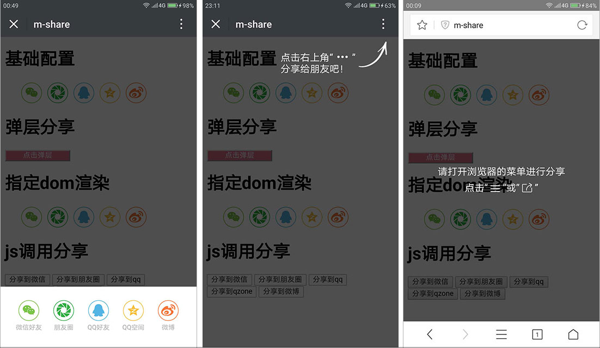

m-share
h5页面分享组件、支持分享到微信、朋友圈、新浪微博、QQ空间、QQ好友。
点击查看demo
下图为：1. 分享拉窗 2. 右上角提示(微信或手q客户端) 3. 弹层提示(其他浏览器)

执行逻辑
| - | 微信客户端 | 手q | qq浏览器 | uc浏览器 | 其他浏览器 |
|---|---|---|---|---|---|
| 分享到微信 | 提示点击右上角分享 | 提示点击右上角分享 | native分享 | native分享 | 弹层提示 |
| 分享到朋友圈 | 提示点击右上角分享 | 提示点击右上角分享 | native分享 | native分享 | 弹层提示 |
| 分享到qq | 提示点击右上角分享 | 提示点击右上角分享 | native分享 | - | 弹层提示 |
| 分享到qq空间 | 提示点击右上角分享 | 提示点击右上角分享 | native分享 | web分享 | web分享 |
| 分享到新浪微博 | web分享 | web分享 | web分享 | web分享 | web分享 |
安装
有两种安装方式
npm安装
npm install m-sharescript引入
<script src="m-share.js"></script>
快速开始
<div class="m-share"></div>
<script>
const config = {...}; // config配置参考下面“基本使用-配置项”
Mshare.init(config);
</script>
配置项
const config = {
link: 'http://www.qq.com', // 网址，默认使用window.location.href
title: '标题', // 标题，默认读取document.title
desc: '分享描述', // 描述, 默认读取<meta name="description" content="desc" />
imgUrl: 'http://backtonature.github.io/project/m-share/demo1.png' // 图片, 默认取网页中第一个img标签
types: ['wx', 'wxline', 'qq', 'qzone', 'sina'], // 启用的社交分享,默认为全部启用
infoMap: { // 针对不同平台设定不同分享内容
wx: {
link: '分享到微信的链接', // 覆盖分享到微信的链接
title: '分享到微信的标题', // 覆盖分享到微信的标题
desc: '分享到微信的描述', // 覆盖分享到微信的标题
imgUrl: '分享到微信的图片链接' // 覆盖分享到微信的图片链接
}
},
fnDoShare(type) {
// 执行分享的回调，type为'wx', 'wxline', 'qq', 'qzone', 'sina'
}
};
注意：
- 所有的配置参数都不是必填项
其他浏览器并没有开放native分享的api，所以对分享到微信、朋友圈、QQ好友设置的infoMap参数，在其他浏览器和手机qq客户端下不会生效.
方法
init(config) - demo
初始化化页面所有class为m-share的元素。
popup(config) - demo
弹出分享弹窗
wxConfig(config)
若当前页面为公众号页面，具备访问微信api的能力，可通过此方法配置微信分享。
Mshare.wxConfig({
title: '',
link: '',
desc: '',
imgUrl: '',
wx: {
appId: '', // 必填，公众号的唯一标识
timestamp: , // 必填，生成签名的时间戳
nonceStr: '', // 必填，生成签名的随机串
signature: '' // 必填，签名
},
infoMap: ...
});
render(el, config) - demo
对指定元素渲染分享icon，el为指定元素或者指定元素的选择器String。
<div id="myDom"></div>
<script>
Mshare.render('#myDom', config);
// or Mshare.render(document.querySelector('#myDom', config));
</script>
to(type, config) - demo
js直接调用分享
<button id="qq"></button>
<script>
document.querySelector('#qq').addEventListener('click', () => {
Mshare.to('qq', config);
});
</script>